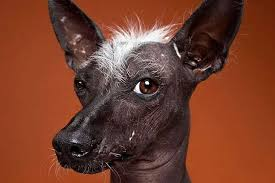

PERROANO
perro abandonado recientemente por una familia alemana, lo dejaron en nuestro establecimiento en buenas condiciones porque no lo podian llevar
perro abandonado recientemente por una familia alemana, lo dejaron en nuestro establecimiento en buenas condiciones porque no lo podian llevar
bulldog muy bien cuidado, tambien dejado en buenas condiciones por imposibilidad de cuidado de su familia

Un perro raza golden encontrado a las afueras de nuestra ciudad

Son dos conejos hermanos que fueron encontrados a las afueras de amsterdan y buscan una familia que les brinde un buen hogar